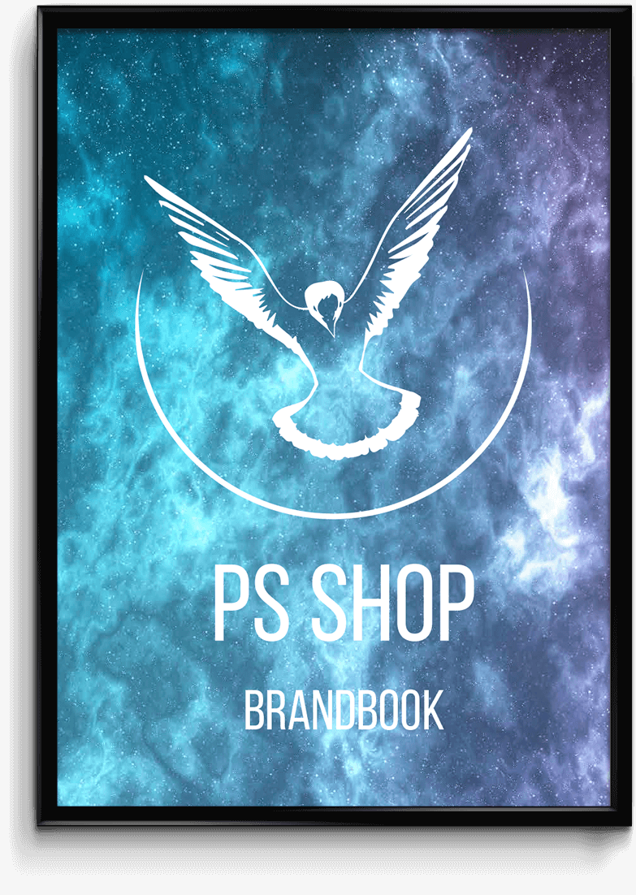
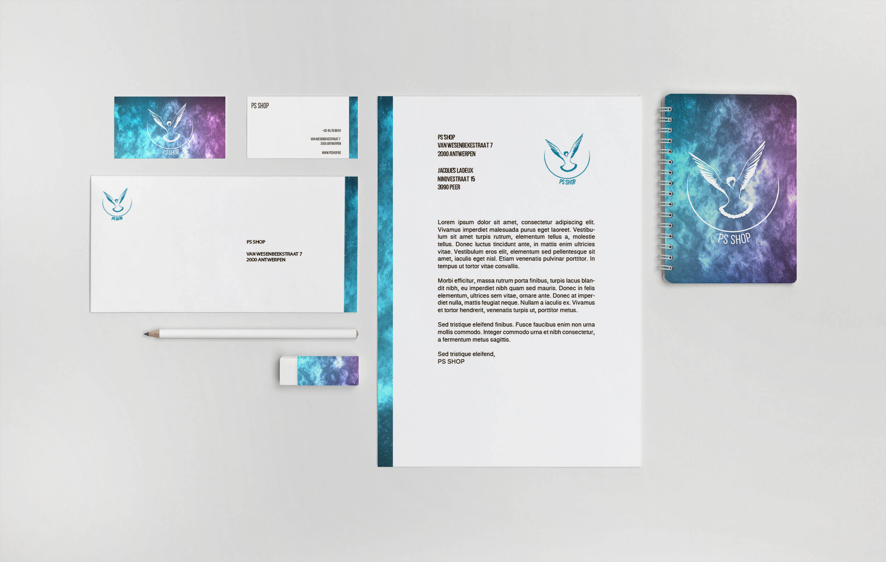

Huisstijlgids PS SHOP


About this project
In opdracht van het vak 'Grafisch Design' werd er een rebranding gedaan voor de imagoverlagende zaken van Antwerpen. De winkel die ik koos, was PS SHOP. Deze winkel is gespecialiseerd in de verkoop van telefonie én biedt de mogelijkheid aan om te bellen naar je geliefden.
Ik koos ervoor om een duif als hoofdelement te gebruiken doordat deze doet denken aan communicatie. PS SHOP zal er altijd voor zorgen dat jouw bericht bij jouw geliefden terecht komt. Het is een basisrecht om te kunnen communiceren. Hier wordt dan ook op ingespeeld in de nieuwe huisstijl van de winkel.